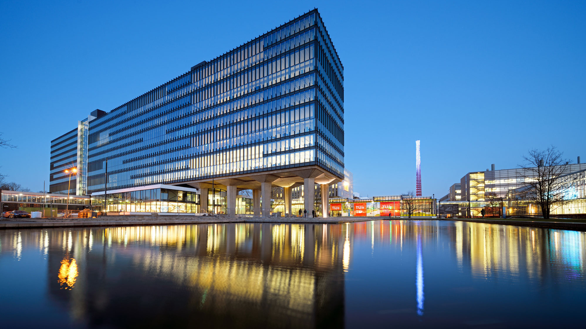

Mijn soft skills straks
- Communicatie
- Probleemoplossend denken
- Kritisch denken
- Leiderschap
- Stressbestendigheid

Een overzicht van waar ik sta aan het einde van mijn opleiding
Ik heb succesvolle cybersecurity-tools en projecten ontwikkeld, zoals een penetratietestframework en geavanceerde netwerkmonitoring.

Ik wil verder studeren in Cybersecurity aan de Technische Universiteit Eindhoven of starten met werken als cybersecurity-specialist bij een bedrijf zoals KPN of Cisco.
Een typische werkdag als cybersecurity-specialist:
Naast mijn werk als cybersecurity-specialist wil ik een eigen consultancybedrijf oprichten om kleine bedrijven te helpen met hun beveiliging.